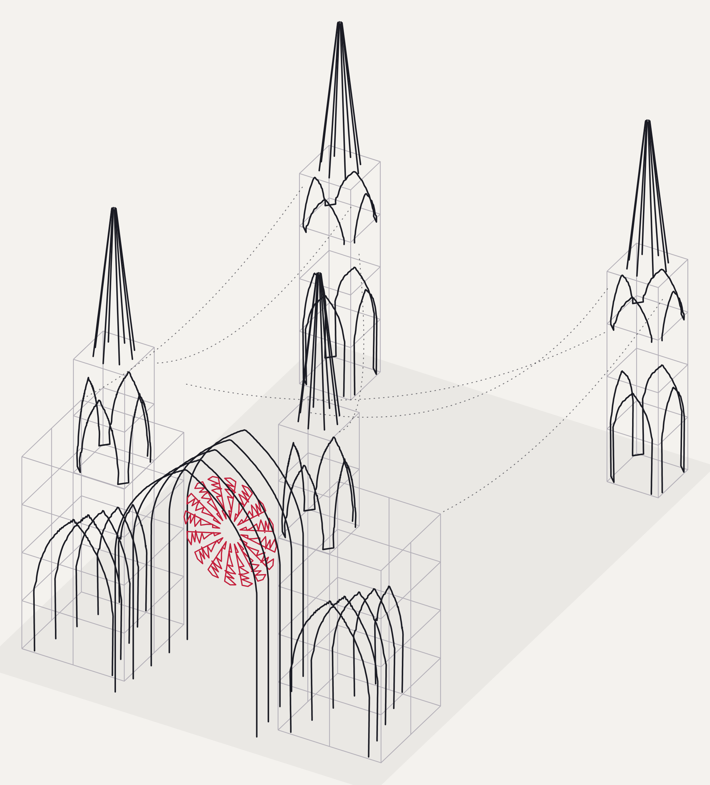
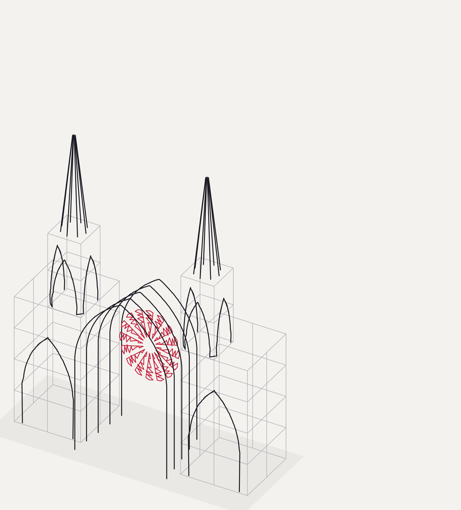
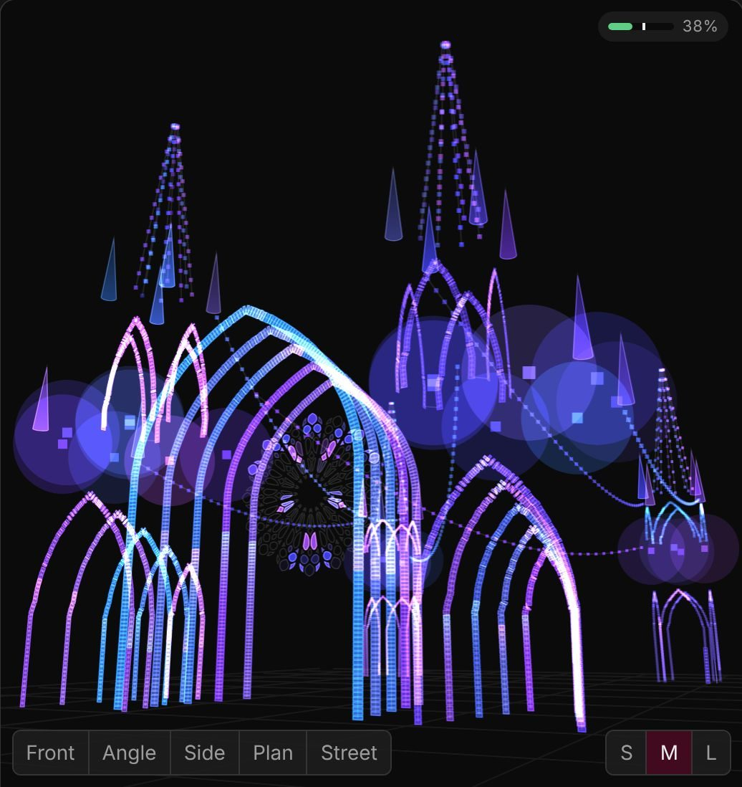

Builds & Events
Where it has stood
From the open playa to a Brooklyn warehouse, the Folly has been raised twice and stood for three events.
-
Black Rock City
Burning Man 2026
The first build and the debut. Listed in the official 2026 art program, the Folly opened at dusk on August 30 with music, ritual and light. Through the week it stood through whiteouts, sunrises and long nights of music.
Covered by ArchiPanic, Dezeen, SFGATE, FreeYork and others. Read the press

@paulalkoby From the Rhino 3D model to the playa · @beatofnycproductions -
Industry City
City of Gods & Vampire Ball
The second build, reconfigured to fit the space (see how). Raised once in Brooklyn, the Folly stood through two Halloween weekends of events:

Adaptations
The Folly can respond to its environment, changing its form to fit each site while keeping its presence.


Lit live
The software behind the light
At every build the Folly is lit with Folly Mix, lighting software we custom-coded specifically for this sculpture. It knows every arch, tower, spire and rose-window cell, and adapts its looks to whichever parts are standing.
